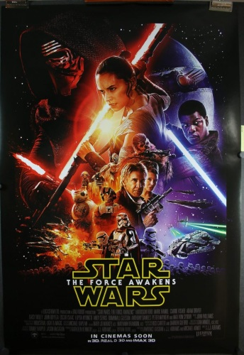

The Force Awakens: The First Episode of the Final Trilogy
Initial reactions
If you watched the trailer on the main page, or if you watched it at the time, you know that it's an awesome trailer. The x-wing flying along the water, the millenium falcon, the cool droids and speeders, the stormtrooper that looks like he's defecting, the cool lightsaber.
The poster also looks awesome. There's a death-star looking planet, Finn holding a lightsaber, Han and Leia, silver stormtrooper armor. Here's where it gets a little weird. At the bottom of the poster you can see that the movie is directed by JJ Abrams. JJ Abrams directed Lost, the TV show with an amazing plot, but an infamously difficult and complicated storyline that seems like it will never resolve and you will never find out how it ends. To this day, a lot of storylines in the show are unresolved, or resolved not to the audience's liking1.
After Watching
To me, The Force Awakens set up a lot of good storylines and characters that didn't end up going anywhere in the end. Finn holds Anakin's lightsaber in the poster, but later in the trilogy doesn't turn out to be force-sensitive, doesn't use the lightsaber anymore, and becomes more like a side quest or comic relief character. Snoke, the villain, brought numerous speculation about obscure characters from legends or characters that didn't come to fruition and were disappointing in the end. Rey, a scavenger, is made to be suddenly powerful, able to resist Kylo, an old Padawan of Luke, and perform a Jedi mind trick on a guard without any training and without any knowledge of the force. Near the end of the movie, Rey defeats Kylo with a lightsaber with no saber training and no force training.
Here's where another problem surfaces. Although it might not be true, there are rumors about things happening in the movie just because of outside influence and not because it was something the directors wanted to happen. Some examples are Harrison Ford choosing for his character to die in the movie2 and Rey becoming the lead protagonist instead of Finn because some people wanted a woman to be the protagonist3. When a movie universe stops focusing on the story and starts focusing on commercialism, when the writers run out of ideas and result to gimmicks, this is colloquially referred to as "jumping the shark"4. This might be amplified by things like cute new droids and cute little puffin birds, meant to replace and add to the love for characters like R2D2 and the Ewoks.